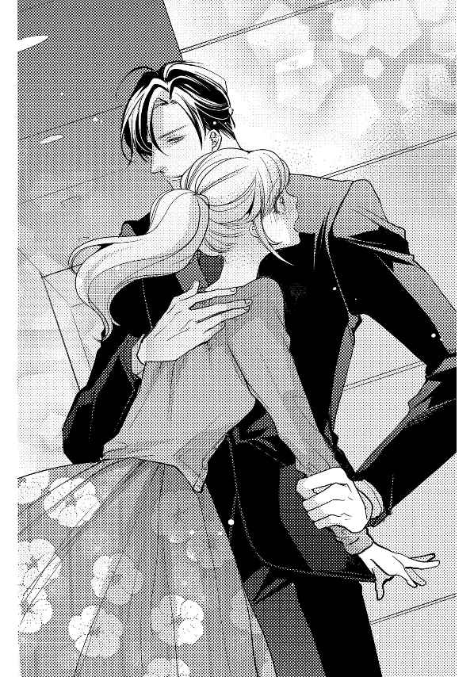

| 空回り女子はオオカミ上司の餌食【イラスト入り】 (無敵恋愛S*girl) | |
| 一文字鈴 | |
株式会社 ぶんか社
空回り女子はオオカミ上司の餌食
一文字鈴・著
ｎｅｃｏ・イラスト
※本作品の内容はすべてフィクションです。
実在の人物・団体・事件などには一切関係ありません。
エレクトロニクス分野で県下最大のシェアを誇る園山 産業のオフィス──。
その開発部のフロアで、二十三歳の朝 霧 美 紀 は売上表を手に、肩までのポニーテールを揺らして、おずおずと課長席の前に進み出た。
「あの、黒崎課長、売上表です」
資料を見ていた黒崎が不機嫌な表情で顔を上げ、チラリと壁にかかった時計を見た。
「やっとできたか。ずいぶんと時間がかかったようだが、寝ていたのか？」
あからさまに嫌味を言われて、書類を提出しようとしていた美紀の肩がピクリと揺れる。
「遅くなって、すみませんでした」
ぺこりと頭を下げる美紀を一 瞥 して、目の前に座っているオーダーメイドのダークスーツを完璧に着こなした美形の男はため息を吐いた。
「まあいい、書類を見せてみろ」
「は、はい......」
緊張しながら売上表を手渡すと、彼は鋭い眼差しで書類に目を通し、小さく頷いた。
「わかりやすくまとまっている。いいだろう」
（よかった）
ほっとして笑顔になった美紀を見つめて、黒崎が低い声で続けた。
「それで、以前頼んでおいたプレゼン用の資料はどうなっている？」
「資料？ あ......」
途中までしかできていないことを思い出し、美紀はかすれた声で答える。
「あの、もう少し......」
「なんだと？」
黒崎の整った顔に、深い縦皺が刻まれる。美紀はこくりと喉を鳴らし、一歩後ずさった。
「すみません。えっと、二日もあれば終わりますので......」
「朝霧の脳は鳥レベルか。資料作りに二日もかけてどうする。いいか、今日の定時までにすべて作成しろ。わかったな」
「え......」
「え、じゃねぇよ。定時まであと二時間ある。十分だろう」
黒崎の剣幕に美紀は目を丸くして、改めて目の前の男を見つめた。
黒 崎 賢 二 、二十九歳。開発部営業課長で、最年少で課長に就任した我が社きってのエリートだ。日本人離れした百九十センチ近くある身長と、モデルのような端整な顔立ちから、社内外を問わず女性ファンが多い。美紀も初めて見た時、理知的な美貌とスーツ姿に心臓を射抜かれ、それから密かに彼に憧れていた。
「定時までだ。わかったな？」
「で、でも......」
「なんだ？ 言ってみろ」
美紀はなんとか締め切りをのばすように彼に詰め寄ろうとして、課長席に勢いよく体当たりしてしまう。ドンッと音がして机が揺れ、その拍子に置いてあった黒崎のマグカップからコーヒーがこぼれた。
「わざとか、朝霧！」
黒崎の目がクワッと見開かれる。
（ひぃっ、怖い）
「す、すみません」
「とにかく、プレゼンの資料を定時までに仕上げろ。いいな？」
これ以上彼に逆らう勇気など一ミリも持っていない美紀は頷くしかできなかった。
「......わかりました」
「それじゃあ、席に戻ってすぐに取りかかれ」
「......はい」
しゅんと肩を落として、美紀はとぼとぼと席に戻る。仲の良い女子社員の大森 リサが心配そうに小声で話しかけてきた。
「美紀、また黒崎課長に叱られたの？」
「うん......」
課長から叱られる頻度が課内でダントツに多い美紀を気遣って、リサが励ますように言う。
「黒崎課長は仕事ができる人だから、スローペースな美紀が気に入らないのかもしれないけれど、叱ったり睨 んだりするのはヒドイわー」
リサの言葉に驚いて顔を上げる。確かに仕事が遅い美紀は黒崎から叱られることが多いが、睨まれているなんてまったく知らなかった。
（黒崎課長が私を......）
チラリと課長席を見ると、書類を見ていた黒崎がちょうど顔を上げて美紀の方を見た。目が合った瞬間、黒崎にギロリと睨みつけられ、美紀は動揺する。
（何もしていないのに、睨まれた......）
隣にいたリサが黒崎の視線に気づいて唇をとがらせた。
「また美紀を睨んでいる。いくらイケメンでも、私の親友をこれ以上いじめたら許さないんだから。ドンマイ、美紀」
（もしかして......ううん、もしかしなくても、私は黒崎課長から嫌われているの？）
そう認識せざるを得ない状況に、ズキンと美紀の胸がうずき、ヒリヒリと焼けつくように痛む。
「美紀、顔色が悪いよ。大丈夫？」
「うん、大丈夫よ」
小さく笑った美紀を見て、リサはポケットの中からスマホを取り出して、弾んだ声を出した。
「そうだ、美紀、聞いてー。今夜、取引先の男性と部内の女子社員とで合コンがあるらしいの。女の子の人数が足りないから来てほしいって。美紀も一緒に行こうよ」
合コンが大好きなリサの誘いに、美紀は小さく笑って首を横に振る。
「ごめんね、私は遠慮しておくわ」
「恋人をみつけるチャンスなのに、どうして行かないの？ ねえ美紀、一緒に行ってよ！お願いだからー」
リサの必死な表情に、合コンはあまり好きではなく、むしろ苦手な美紀は頬を引きつらせた。
「あの、私、用があって」
「合コンよりも大切な用があるの？ あっ、もしかして美紀、彼氏ができたの？」
「......」
（合コンを断る理由が思い浮かばないから......リサちゃん、嘘をついてごめんね）
美紀は心の中で詫び、小さく頷いた。
「そ、そうなの。彼氏がいるから、合コンには行けない。ごめんね」
「んまぁ！ そうだったの。美紀は可愛いから、彼氏ができるだろうと思っていたけれど、本当にうらやましい。社内の人？ あぁ、私もイケメンの彼氏がほしいわー」
リサが叫んだ直後、鋭い声が響いた。
「朝霧！ 無駄話をしていないで、さっさと仕事をしろ」
「は、はいっ」
美紀だけが名指しで叱られてしまった。
（やっぱり私、黒崎課長によく思われていないんだ......）
しゅんと肩を落とす美紀に、リサが申し訳なさそうに謝った。
「ごめんね、美紀......」
「平気、気にしてないよ。頑張ってきてね」
「えへっ、素敵な男をゲットしてくるー。定時で仕事が終わるように頑張るぞー」
Ｖサインをして自席へ戻っていくリサの後ろ姿を見送り、美紀は途中までできているプレゼン用の資料を見つめた。
（定時までに仕上げなくては。頑張れ、頑張れ、私......）
ペシペシと自分の頬を両手で叩いた美紀は、机の上のノートパソコンを立ち上げ、カタカタとテンプレートにデーターを打ち込んでいく。エクセルは苦手なので、なかなか進まない。
営業に出ていた社員が戻り、フロア全体が賑やかになった。
「──朝霧」
名を呼ばれて、あわてて振り返ると、黒崎が不機嫌そうな顔で仁王立ちしていた。
まだ資料作りが終わっていない美紀は動揺する。
「仕事はどこまで進んだ？」
「あの、えっと」
口ごもっていると、皮肉にもフロア全体に定時を知らせる電子音が響いた。
胸の前で腕を組んだ黒崎が鋭い眼差しを向ける。
「朝霧、俺は定時までに済ませろと言ったはずだが？」
「で、ですよね。本当にすみません。残業して今日中に仕上げますので......」
「何が残っているんだ？」
美紀は机の上とパソコンを交互に見つめて、恐る恐る答える。
「あと、表と脚注を作成するだけです。でも、先月の収支データが見当たらなくて......」
ゴンッと大きな音がした。黒崎が机を蹴った音だ。美紀の身体がぴくりと揺れる。
「バカ！ なぜ、上司の俺にすぐに相談しない？ まったくお前は」
「あ、あの......これからすぐに資料室へ行って......」
黒崎は片手を上げて美紀を制した。
「それでは時間がかかりすぎる。直接データを送ってもらった方がいい。電話を借りるぞ」
黒崎はすっと手を伸ばして、美紀の机の上にある電話の内線ボタンを押し、受話器を取り上げた。
「企画部の沢村 主任を──ああ、沢村か。俺だ──誰がオレオレ詐欺だ！ 開発部の黒崎だ。頼みがある。先月の収支データをメールで送ってほしい。そうだ、急いでくれ」
手際よく話をつけた黒崎が受話器を置き、美紀を見た。
「データが届いたら、すぐにお前のフォルダに転送する」
資料室へ探しに行くとなると、小一時間ほどかかるところだった。
「あ、ありがとうございます」
「他に困っていることはないか？ 何かあれば遠慮せずに俺に言え」
黒崎の口調は相変わらずだが、眼差しは穏やかで、美紀は少しの間ぼぅっと彼を見つめていた。
「い、いいえ......」
「それじゃあ、資料作りを今日中に頼むぞ」
「は、はい」
踵 を返して黒崎が課長席に戻ると、美紀は大きく息を吸った。
（よしっ、仕事を頑張る！）
美紀はパソコンの画面を見ながら、カタカタと資料作成に取りかかった。
仕事が早い黒崎が、さっそく先月の収支データをメールで送ってくれたので助かった。
三十分ほどで資料の表が完成し、あとは脚注だけになる。
（もう少し......ふぅ、ちょっと休憩してこよう）
喉が乾いた美紀は、半分以上灯りが消えたフロアを出て、給湯室に向かった。
誰もいない室内はひんやりと空気が冷えている。照明と暖房を入れて、手早くコーヒーを淹れていると、渋川 課長が入ってきた。
セクハラ課長という、すごいあだ名がついている渋川課長は、妻子がいるのに、あちこちの女子社員をくどいている四十五歳の男性だ。
無視するわけにいかずに、美紀は会釈をした。
「渋川課長、お疲れさまです」
「開発部の朝霧さんか......」
にっこりと笑った渋川課長がつかつかと近づいてきた。
「今度、二人で食事に行かない？ 君のような可愛い子にピッタリのお店があるんだよ」
顔を近づけられて、ゾワッと鳥肌が立ち、身体を強張らせた。
「......せっかくですが、忙しくて......」
「冷たいねぇ、課長が誘っているのに、そんな断り方をしていいと思っているの？」
いきなり強く腕を掴まれて悲鳴をのみ込む。
（た、助けて──）
心の中で叫んだ瞬間、鋭い声が給湯室に響いた。
「渋川課長、俺の部下に何をしているんですか？」
ドアを開けた黒崎が怒りをあらわに仁王立ちしているのを見て、渋川課長がビクンと肩を揺らした。
「く、黒崎課長......いや、違うんだ。朝霧さんと僕は」
「──その手を離せ」
すごむような低い声に、ぎょっと目を見開いた渋川課長が、あわてて美紀の手を放した。
「少し話をしていただけだよ。それじゃあ」
すごすごと給湯室から立ち去る渋川課長を一瞥し、黒崎が美紀の方を向いた。表情はまだ険しいままだ。
「あの、ありがとうござ......」
「ボサッとするな、このバカ！」
黒崎の剣幕にお礼の言葉が途中で止まってしまう。
相変わらず口は悪いが、それでも彼が心配してくれていることを感じて、美紀は頭を下げる。
「ああいう時は大きな声を出せ。渋川課長は小心者だから、すぐに逃げ出すはずだ。間違っても誘いに乗るなよ」
（黒崎課長はすごく厳しいけれど、頑張っているところはちゃんと見てくれるし、困った時には親身になって助けてくれる......）
外見の良さだけでなく、内面も尊敬できる人だ。
（でも、私は黒崎課長から嫌われているから......）
改めて自覚した途端、胸がズキンと痛み、美紀は盛大にため息をついた。
定時を一時間半ほど過ぎると、開発部のフロアはさらに閑散としてきた。
美紀はまとめのページの脚注を打ち込みながら、苦手なグラフに手間取っていた。
（えっと......あれ、合計値が違うのはどうしてだろう）
データを入れ間違えてないか確認していると、黒崎が課長席から立ち上がった。
「朝霧、どうした？ 何を困っているんだ」
「黒崎課長......」
彼は美紀のすぐ後ろに立つと、パソコンの画面をじっと見つめた。
黒崎がそばにきただけで、心臓がドクドクと早鐘を打ちつけてしまう。
「デ、データを入力したのですが、数字がおかしくて」
「見せてみろ」
席を立ち上がろうと腰を浮かしかけた瞬間、黒崎が腕を伸ばし、後ろから抱きしめるようにしてパソコンのマウスを握った。
「ふぁ......っ」
思わず変な声が出て、顔が熱くなる。
身体が密着し、背中越しに彼の温もりを感じて、頭の中が真っ白になってしまう。
耳元で低い声が聞こえた。
「表の数値がおかしいようだな」
キーボードを叩く彼の指先の素早い動きをぼぅっと見つめ、そっと彼の横顔に視線をうつした。
パソコンの画面を見つめたまま、彼は無造作に前髪を掻き上げ、小さく息を吐く。
はらりと落ちた前髪と切れ長の瞳から目が離せず、高鳴る鼓動が彼に聞こえないかと不安になるほどドキドキしていた。
（し、仕事中なのに、黒崎課長がそばにいるだけで胸が苦しくて息ができない......）
「このデータか」
さらに強く後ろから美紀を抱き締めるようにして、彼は片手でキーボードを叩き、もう片方でマウスを操作する。
近すぎる距離に身体を強張らせていると、いきなり名前を呼ばれた。
「朝霧」
「は、はい」
反射的に振り向いた瞬間、彼の顔がすぐ近くにあって驚いた。
勢いがついていたので途中で止まらず、気づいた時には美紀の唇にやわらかな感触が触れていた。
少しして、それが彼の頬だと気づく。
「！」
偶然とはいえ、黒崎の頬にキスをした美紀は大きく目を見開いて息をのむ。心臓が壊れそうなほどバクバクと大きく脈打ち、あわてて口を開いた。
「......あ、ち、ちがうんです。ふっ、振り返ろうと......わ、私......す、すみません......」
動揺しすぎて、何を言えばいいのかわからず、がばっと頭を下げる。次の瞬間、鈍い音がして、すぐそばに座っている黒崎の顔面を頭突きしていた。
「痛......っ」
石頭なのか、美紀の方は全然痛くなかったが頭突きされた彼は顔を右手で覆っている。
「す、すみません。あの......」
「大丈夫だ。それより、騒ぐと周囲に気づかれる」
おそるおそる周囲を見渡すと、定時から時間が経っているので、開発部のフロアは社員が少なく、誰も気づいていないのが不幸中の幸いだった。
（わ、私ったら。黒崎課長の頬に、キ、キスしただけでなく、頭突きしてしまうなんて、本当にあり得ない。こんなドジだから嫌われるのかな......）
そんなことを考えていると、黒崎はもうパソコンの画面をじっと見つめていた。
ふいに机上に置いてあった美紀のマナーモードにしてあるスマホが小さく震えた。
ちらりと画面を見ると、リサからのメールだった。仕事中なのでそのままにしておくと、パソコンの画面を見つめたまま、黒崎が低い声で尋ねてきた。
「──出なくていいのか？」
「は、はい。友達からのメールです。後で大丈夫なので」
「そうか」
それ以上、彼は何も言わずに小さく息をつき、美紀を見た。どうやら金額が合致したようだ。
「朝霧、数式を間違えていたぞ。それも二か所だ。こんなミスをするなんて珍しいな」
普段はミスが少ない美紀だが、給湯室から戻ってから、仕事に集中できずにいた。
「すみませんでした」
「彼氏のことでも、考えていたんだろう」
「え......？」
美紀は大きく目を見開いて黒崎を見つめる。先ほどリサと話したことを彼に聞かれていたことに気づき、誤解を解こうと思ったけれど、合コンに行きたくないから嘘を言ったと説明しても信じてもらえるかどうかわからない。それに彼から頻繁に嘘をつく人間だと思われたくなくて、美紀は唇を噛みしめた。
彼は睨むような眼差しを向けたまま低い声を出す。
「どうせさっきのメールもその男からだろう。男と遊ぶ時間はあるのに、仕事をする時間はないのか。もっと真剣に仕事をしたらどうだ」
冷やかな彼の声に、頭上から冷水を浴びたような衝撃を受け、美紀の目にじわりと涙が浮かぶ。
泣かないように手をぎゅっと強く握りしめる。
「本当に、すみませんでした」
「もういい」
「......」
「それが終わったら、共有ファイルに保存しておいてくれ」
「は、はい」
すっと立ち上がり、彼は課長席に戻ると、ボールペンを持って資料に視線を落とした。
美紀はあわててパソコンに視線を戻し、まとめのページを打ち込んでいくが、パソコンを操作する手が小刻みに震えていた。
（集中して頑張らないと。これ以上嫌われたくない......）
胸がズキズキと痛む。黒崎の方を見ないようにして打ち込んでいくと、ようやく脚注が完成した。
ほっとして息をつき、共有フォルダの中に保存して、パソコンを閉じ、机の上を片付ける。
「朝霧、終わったのか？ 遅くまでご苦労だったな」
黒崎の声に、肩をビクンと震わせて振り返る。
「は、はいっ。あの、手伝ってくださって、ありがとうございました」
彼の目を見ることができずに、バッグを持ってドアに向かうと、背後から鋭い声が聞こえた。
「待て。朝霧は駅まで歩きだったな。外はもう真っ暗だぞ。俺が駅まで送って行く」
「で、でも......悪いですし......」
「遠慮しなくていい。俺の仕事も終わったところだ。デスクを片付けるから少し待っていろ」
有無を言わせない口調に、美紀は仕方なく頷いた。
いくら憧れている相手でも、先ほどこっぴどく叱られたばかりで、これから二人きりで夜道を歩くと思うと胃が痛い。
彼は素早くデスクを片付けて声をかける。
「朝霧、行くぞ」
「あ、はい......」
あわてて黒崎の後について会社の玄関を出ると、周囲はすっかり日が落ち、オフィス街のネオンと行き交う車のライトがまぶしく、冷たい風が吹きつけた。
ブラウスの上にカーディガンという薄着な服装を悔いながら歩いていると、黒崎が驚いた表情で足を止めた。
「薄着だな。これでも着ていろ」
すっとスーツの上に着ている黒のトレンチコートを脱いで、バサッと美紀に羽織らせる。
「あっ、あの、でも」
「俺は大丈夫だから、そのままお前が着ていろ。悪かったな、急に残業させて」
美紀は驚いて首を小さく横に振った。
「いいえ、残業になったのは、仕事が終わらなかった自分のせいなので」
黒崎は小さく首を横に振った。
「それから......少し言い過ぎたと思っている」
「......いいえ」
（やっぱり、優しい人だ。嫌いな私にもちゃんと謝ってくれるし、こうして送ってくれて）
彼が気にしていると知り、胸がじわりと熱くなった。
大きすぎてぶかぶかのトレンチコートの前を押さえながら、黒崎と並んで歩いて行く。
冷たい風が頬に当たり、息が苦しい。ふいに黒崎が漆黒の夜空を見上げてつぶやいた。
「きれいだな。こんなにはっきりと星が見えるのは珍しい」
美紀も上を向いた。降ってくるように星が瞬いている。
「本当にきれいですね。空から星が落ちてきそうです」
立ち止まったまま、二人で吸い込まれそうに美しい夜空を見上げていると、夢の中に入るような気持ちになる。ふいに黒崎の低い声が響いた。
「朝霧は、エクセルが苦手だったな」
「あ、はい。すみません、仕事が遅くて。それにドジが多くて」
叱られるのだろうと思っていると、彼はすっと美紀を見て、優しく目を細めた。
「提出は遅いが、お前は丁寧な仕事をするし、書類はよくまとまっている。苦手なエクセルもちゃんと使えるようになっているし、よくやってくれていると思う」
優しくなった彼の口調に、美紀は信じられない思いで彼を見つめた。
（私が褒められている？ もしかして、それほど嫌われていないのかもしれない）
そう思うと、じわじわとうれしさが込み上げ、頬がゆるむ。
「お前は優秀な部下だ。もっと自信を持っていいぞ」
そう言うと彼は歩き出した。
「は、はい......」
（本当に、夢みたい......）
ふわりと気持ちが舞い上がり、歩きながら、チラリと隣を見る。穏やかな漆黒の瞳に、胸がきゅん、と締め付けられた。
角を曲がると大通りから駅前が見えてきた。
（もう少し、二人で歩いていたかった）
そんな気持ちになると同時に、仕事を手伝ってもらったお礼に黒崎を食事に誘ってみてはどうか、とふと美紀は思いついた。
褒められたとはいえ、あまりよく思われていないのに誘っても無駄だろうというあきらめの気持ちと、二人きりのこんな機会はめったにないという切迫した気持ちで美紀はあせりはじめる。
駅前の大きな交差点で信号待ちにかかった。
（い、今だわ。勇気を出して黒崎課長を食事に......）
美紀は唇を噛みしめて黒崎に話しかけた。
「あのっ......黒崎課長」
「なんだ？」
美紀の心臓がドクドクと早鐘を打ちつける。
「も、もし、よかったらっ......」
「うん？」
「わ、私と......しょっ、しょっ、食事を......」
言いかけた瞬間、背後から女性の声が聞こえた。
「賢二？ こんなところで会うなんて、偶然ね」
信号待ちの人々の中から、きれいな女性が近づいてきた。
（よ、呼び捨て......？ あっ、この人見たことがある。確か同じ会社の......）
美紀はハッとして彼女を見つめた。すぐに彼女が美人な上に仕事もできると噂の秘書課主任、工藤麗子 だと思い出す。
「麗子......ひとりか？」
黒崎が、女性を下の名前で呼び捨てにするのを初めて聞いて、美紀は目を丸くした。ドクドクと胸が嫌な音を立てる。
「仕事が早く終わったから、駅前でショッピングをしていたの。賢二は？」
ブランド名の入ったバッグを掲げて麗子が微笑むと、黒崎も小さく笑った。
「俺は部下を駅まで送ってきた。ちょうどよかった。麗子に少し話があったんだ。この後、時間はあるか？」
「ええ、大丈夫よ。でも──」
麗子が、ちらりと美紀の方を見た。黒崎が咳払いして低い声を出す。
「悪いな、朝霧。ここでいいか？」
エレベーターを上がれば、もう駅の構内だ。
「あっ、はい。ありがとうございました。あのコート......」
あわてて羽織っていた大きなトレンチコートを脱ぐ。その直後、夜風が身体を吹き抜けて、美紀の全身をひやりとした冷たいものが包み込んだ。
彼は手渡したコートにすっと腕を通すと、小さく微笑んだ。
「お疲れ、じゃあな、朝霧、気をつけて帰れよ」
「はい、失礼します」
黒崎と別れた後、ひとりでエレベーターの前まで歩くと、美紀はそっと後ろを振り返った。
（あ......黒崎課長、笑っている）
親しそうに麗子と話す黒崎を見て、美紀の胸がぎゅっと締めつけられた。
（この後、二人で食事に行くのかな。それとも......）
フルフルと首を横に振り、美紀は唇を噛みしめてエレベーターに乗ると、そのまま後ろを振り返らずに改札口を通り抜けた。
翌朝、美紀は駅からオフィスまで、寝不足の目をこすりながら歩いていた。
昨夜は、どうしても黒崎と麗子が楽しそうに話している姿が脳裏から離れず、今頃二人はどうしているのだろう、などと考えて眠れなかった。
（もう気にしない。黒崎課長と星空を見られただけで夢のようだった。仕事ぶりを褒めてもらえたし、もう十分。これ以上望むなんて......）
深呼吸をして開発部のフロアに入ると、美紀は明るく挨拶をして課長席の前に立った。
「黒崎課長、おはようございます。昨夜は駅まで送っていただき、ありがとうございました」
書類を見ていた黒崎が顔を上げた。
「朝霧か。おはよう──早速だが、昨日作った資料をＰＤＦにして、各部署にメールしてくれ」
昨夜のことには何も触れず、いつものように仕事の指示が飛ぶ。
「はい。すぐに送ります」
美紀は席に着いてパソコンを立ち上げ、ＰＤＦ化した資料をメールで送付していく。それが終わると会議用の資料をまとめようとファイルを手に取った。ふいにポンと肩に手が置かれ、振り返るとリサがにっこりと笑っていた。
「美紀、おはよう。朝から忙しそうね」
「おはよう、リサちゃん、昨夜の合コンはどうだった？」
「それがね、イイ男がひとりもいなかったのよー」
肩をすくめて、お手上げというポーズでリサがため息をつく。
「チャラチャラした遊び人と、オタクみたいな小太りの男しかいなくてガッカリ。会社で毎日、黒崎課長みたいなイケメンを見ているから目が肥えしまって大変よー。あ、そういえば、黒崎課長って恋人がいるらしいね。残念だわ」
リサの言葉に、美紀は目を大きく見開いた。
あれだけモテる人なので、むしろ恋人がいて当然だけど、特定の相手がいるという噂を聞いたことがなく、フリーなのだろうと思っていた。
「く、黒崎課長に、恋人がいるの？」
美紀は、自分でも驚くほど動揺していた。
リサは頷き、小声で囁く。
「合コンに来ていた女子社員のひとりが、ひと月くらい前に黒崎課長に告白したんですって。そしたら好きな人がいるからってハッキリ断られたらしいよ」
昨夜の麗子と楽しそうに話す黒崎の顔を思い出し、胸が針で刺されるようにチクチクと痛んだ。無意識のうちに美紀は胸を押さえる。
「美紀？ 顔色が悪いよ」
「だ、大丈夫よ。さあ、仕事を頑張らないと」
「うん、また後でね」
美紀はひとりになると、そっと唇を噛みしめた。黒崎に恋人がいたという事実が胸を貫き、苦しくてたまらない。
そもそも昨夜のことだって、彼は上司としての立場から駅まで送り、仕事に関して褒めてくれただけなのに、舞い上がって食事に誘おうと考えていた自分がなんだか滑稽だ。
（それでも、私は黒崎課長のことが好き......）
彼には恋人が、麗子さんがいる。あきらめなければいけないのに、彼を思う気持ちは行き場を失ったまま、心の中でさらに大きくなってしまう。
もし許されるなら、好かれていなくてもいいので、彼にひとことだけでいいから気持ちを打ち明けておきたかったという思いが湧き上がり、あわてて否定する。
（ううん、今さらそんなことをしても、仕事で毎日接する黒崎課長を困らせるだけだし、麗子さんにも悪いから......）
黒崎と麗子なら、二人とも仕事ができるし、美男美女でお似合いだ。
美紀はぎゅっと目を閉じて首を小さく横に振り気持ちを切り替えると、深呼吸をして仕事に取りかかった。
苦手なエクセルで作成する書類に集中していると、あっという間に定時になる。
周囲の社員たちが帰宅の準備をはじめ、仕事を終えたリサが小走りに走ってきた。
「美紀、これから私、別の合コンに誘われているの。今度こそイイ男をゲットしてくるわー。美紀も帰れそう？」
「私も、あとファイルを返すだけで仕事は終わりよ。楽しんできて」
「ありがとう、じゃあ、またね」
リサが弾んだ足取りでフロアを出ていくのを見送って、書類を片付ける。
そっと課長席を見ると、空席だった。美紀は息をつき、ファイルを両手に抱えてフロアを出る。
階段を下りて書庫の前までくると、他の社員がいるのか、入口のドアが少し開いて灯りが漏れていた。
「失礼します」
ドアを背で押し開けながら書庫に入った美紀は、思わず息をのんだ。
「あ......」
書庫にいたのは、黒崎と麗子だった。
しかも抱き合うようにして、黒崎の身体に麗子がしがみついている。
目を見開いた美紀は驚きのあまり持っていたファイルを落とした。ものすごい音と共に持っていたファイルが床に散らかる。
ハッとした麗子が黒崎から離れて、恥ずかしそうにうつむき、黒崎は驚いて表情を強張らせながら美紀を見つめている。
呼吸を忘れていた美紀は、ようやく息を吸い込み、かすれた声を出した。
「......す、すみません」
震える手でファイルを拾って棚に戻すと、美紀はそのまま二人の方を見ないようにして、足早にドアへ急いだ。頭の中は真っ白だった。
「朝霧、待て！」
「......っ」
黒崎の声に応える前に、美紀は駆け出していた。
「朝霧！」
黒崎の呼び声が背後で聞こえたが、振り返らずに書庫を出る。廊下を曲がろうとして、すぐに後ろから腕を掴まれた。
「待ってくれ」
足を止めた美紀は、身体を強張らせて振り返った。
「......手を離してください」
視線を大きく揺らす美紀を見て、黒崎は男らしい口元を引き結んだ。
「誤解だ、朝霧」
「す、少し驚いただけです。逃げ出してすみません。あの、麗子さんが待っていると思いますので、戻ってあげてください」
「麗子はただの友人なんだ。俺達は同期だ」
「......」
「朝霧、麗子とは本当に何でもないんだ」
黒崎の声に美紀はぐっと拳を握りしめて顔を上げた。
「だっ、抱き合っていたじゃないですか。それなのにただの友人だなんて、麗子さんが気の毒です」
「違う。脚立から落ちそうになったから支えたんだ」
「え......？」
「少し前にフロアを出て書庫に書類を探しに行った。麗子も仕事で探し物をしていて、書庫の上の方にあるファイルを取ろうとしていた。書庫の中央に脚立が立っていただろう？」
「脚立......」
美紀は先ほど書庫で見た記憶をたどる。そういえば、二人の横に大きな脚立が立っていたことを思い出す。
「脚立から降りる時に、バランスを崩して落ちそうになった麗子を、俺が支えた。そのタイミングでお前が入ってきた」
「......でも......」
唇を噛みしめてうつむくと、彼は掴んでいる腕の力を強めた。
「は、放してください」
動揺する美紀をじっと見つめたまま、黒崎が真摯な表情でたずねた。
「聞きたいことがある。お前は恋人がいると以前、大森と話していた。この会社の人間だと。そいつは誰だ？」
「......え、それは......」
美紀の心臓がドクンと嫌な音を立てる。あの時ああいったのは、合コンに行きたくなかったからだ。
「どこの部署の誰なのか知りたい。教えてくれ、朝霧」
なぜ彼がそんなことを聞くのかわからず、美紀は途方に暮れる。そもそもあれは嘘なのだ。
「言いたくありません......」
「朝霧！」
「......っ」
黒崎の剣幕に驚いた美紀は、思わずかすれた声で答えていた。
「う、嘘なんです......」
「嘘？」
形のよい眉をしかめて、黒崎は美紀をじっと見つめる。
美紀はうつむきながら正直に答えた。
「合コンに行きたくなかったので、彼氏がいると言って断ったんです」
「──そうか、お前が嘘をつくとは思わなかった」
黒崎がめずらしく上ずった声を出すのを聞いて、美紀の目頭がじわりと熱くなり、涙が浮かぶ。
「すみませんでした」
美紀は彼の一瞬の隙を突き、彼の手を振り払うと、その場から駆け出していた。
「朝霧......！」
動揺している黒崎の声が聞こえたが、美紀は立ち止まらずに廊下を走り、階段を駆け上がろうとする。
「待てと言っているだろう！」
強く腕を掴まれ、強引に振り向かされる。美紀の表情が強張った。
「やっ、放して」
「朝霧......」
顔を上げられずにうつむいている美紀の頭に黒崎が優しく手を置いた。
「落ち着いてくれ」
「黒崎......課長......」
「──好きなんだ」
言葉の意味が理解できず、美紀は黒崎を見つめ返した。
「えっ......？」
彼は静かな口調で繰り返した。
「俺はお前のことが好きなんだ。お前が俺の部下になった頃からずっと好きだった。もう少しお前をいじめてから告白するつもりだった」
はっきりと告げられた言葉に、美紀は大きな瞳をさらに大きく見開いた。
「え......好き......？」
ふいに彼に強く腕を引っ張られ、美紀はバランスを崩して、たくましい彼の胸の中に倒れ込む。

「あ、あの......っ、い、今......」
「何度でも言う。俺はお前のことが好きだ。付き合ってほしい」
耳元でささやかれ、ぴくりと美紀の肩が揺れる。
「......う、嘘......」
「嘘じゃない。俺は本気だ」
黒崎は優しく微笑んだ。
「だっ、だって、課長、私のことを怒ってばかりで......」
「あわてたり困ったりするお前が可愛かった。見ているとどうしてもいじめたくなる」
「お、おかしいじゃないですか。ふ、普通は好きな子に、そんなことはしないのでは......」
彼は目を細めて美紀を見つめた。
「バカ、好きだからいじめたくなるんだ。叱ったり怒ったり、わざと顔を近づけて振り向かせたり、仕事を教えながら後ろから抱き締めたり、男なんてそんなものだ」
「......黒崎課長、ほ、本当に？」
唇を噛みしめた美紀が、不安そうな表情でじっと黒崎を見つめている。
「まだ納得していないようだな」
「だって......黒崎課長は麗子さんのことを好きなんだと......」
「違う」
彼はきっぱりと言い切った。
「でも、社内で二人のことが噂になっているし......それに」
「噂がどうでも、俺達はそんな関係じゃない。ただの友人だ」
「でも、呼び捨てにしているし、この前も駅前で親しそうに」
「口止めされているが、麗子は企画部の沢村と付き合っている。麗子と沢村と俺は三人とも同期なんだ。この前二人が喧嘩して、俺が手紙を届けたりメッセージを伝えたり、間に入って仲裁していた。だから本当にお前が気にかけるようなことは何もない」
黒崎は少し照れたような微笑みを浮かべて付け加える。
「お前は思っていることがすぐ顔に出る。麗子のことを気にしているとすぐにわかった。お前に嫉妬されるのはすごくうれしかった」
「......」
「どうしようもないくらいお前に惚れている。いつも一生懸命で、丁寧に仕事をするお前のことをずっと見てきた。俺が好きなのはお前一人だ。何度も言うが、麗子は同期でただの友人だ。信じてほしい」
言葉が出てこずに、美紀は彼の美貌をぼんやりと眺め、小さく頷いた。
「美紀......これから二人の時は、俺のことを名前で呼んでくれ」
「あのっ、黒崎課長......」
「賢二だ、美紀」
「け、賢二さん、あの、私......」
「美紀、お前のことが好きだ。俺と付き合ってくれ」
「......付き合う......？」
「返事は？」
「......」
夢の中にいるようで、頭の中がぼんやりとして、返事ができない。
「美紀？」
彼のかすれた声にハッと我に返った。彼の緊張した眼差しに気づき、美紀の胸がぎゅっと締めつけられる。
「わ、私......」
口を開いた瞬間、彼に対する熱い気持ちと共に、美紀の目から涙があふれ出た。
目を見張った彼が、あわてて美紀の背中をさする。
「なぜ泣く？ 返事を急がせ過ぎたのか？ すまない」
いつも余裕がある彼がうろたえる姿が愛しくて可愛い。美紀は思わず彼の背中に手を回して、たくましい身体にしがみついていた。
ピクリと大きく彼の身体が揺れる。
彼の胸に額をくっつけたまま、思い切って自分の気持ちを告げる。
「私、よく怒る黒崎課長のことを怖いと思っていました。きっと嫌われているんだろうと。でも......」
「──でも？」
「厳しいけれど、良いところを褒めてくれ、ダメなところを手伝ってくれる課長のことを、大好きになっていました」
気持ちを告げると同時に、美紀の頬に涙がこぼれ落ちた。
ぽろぽろと涙が伝う濡れた頬を、黒崎の指が拭うように優しく撫でる。
「よかった。お前に恋人がいたら、どんなことをしてでも、その男から奪うつもりだった」
俺様課長のつぶやきに美紀が顔を上げると、そっとあたたかな温もりが唇に触れた。
「......ん......っ」
ついばむような優しい口づけに、今まで感じたことのない甘いしびれが背中をせり上がってくる。
うなじに差し込まれた彼の指先が優しく髪を撫で、ゆっくりと唇が離れると、彼は低い声で囁いた。
「俺は嫉妬深いから、覚悟しておけよ」
「えっ、嫉妬って......？」
彼の美貌に穏やかな微笑みが浮かぶ。
「これから先、他の男のことなど考えられないくらい、お前の頭の中を俺でいっぱいにしてやる」
熱く囁かれて、トクンと大きく胸が跳ね上がる。
「仕事が終わったら、俺のマンションへ来てくれ」
美紀が唇を噛みしめて小さく頷くと、彼はほっとした表情で優しく美紀の肩を抱きしめた。
仕事が終わってデスク周りを片付けた美紀は、黒崎と一緒に会社を出た。彼の大きな手がそっと美紀の手に触れ、二人は手をつないだまま、ゆっくりと歩いていく。
彼は職場から近い高層マンションを見上げて言った。
「美紀、この八階が俺のマンションだ」
エントランスホールを通ってエレベーターに乗り八階に着くと、彼はそのまま美紀を部屋に招き入れる。
モノトーンのインテリアで統一されたおしゃれな室内はゆったりとした広さがある。
リビングに暖房を入れ、黒革の大きなソファーに座って二人でコーヒーを飲んでいると、視線を感じた。美紀が顔を上げると、彼が優しい笑みを浮かべて、じっとこちらを見つめていた。
「緊張しているようだな。俺といる時はもっとリラックスしてくれ」
「黒崎課長......」
「違うだろう？」
彼のあたたかい手が美紀の頬を撫でた。指先から伝わるあたたかさに、トクトクと心臓が音を立てて速まっていく。
「......賢二さん」
言い直すと、彼は小さく笑って、美紀を愛おしげに抱き寄せた。
たくましい彼の胸に頬が当たると速い鼓動が響いて、緊張しているのは自分だけではないことを知る。彼への愛しさが込み上げた。
「美紀、俺のことを好きだと、もう一度言ってくれ」
彼の指先が美紀の顎にかかり、すくい上げるようにして上を向かせる。星空よりも美しい漆黒の瞳に、美紀はこくりと喉を鳴らした。
「す......き......です......」
間近で熱く見つめられ、恥ずかしくて小声でつぶやく。
「そんな小さな声では聞こえない。もう一度言ってくれ」
「す、好きです」
彼の表情がうれしそうに輝き、ゆっくりと上体を倒して美紀に深く口づけた。
唇に伝わる熱とやわらかな感触に、ドクンと心臓が跳ね上がる。
彼は角度や動きに変化をもたせて口づけを深めながら、強引に舌を入れてきた。
「んっ......、ん──」
初めてのディープキスに戸惑う美紀の口内を、荒々しく彼の熱い舌が掻き回していく。
彼は舌を絡ませながら、ゆっくりと美紀の赤い頬を撫で、小さく笑って口づけを解いた。
「美紀、好きだ。こんなに強く惹かれたのはお前が初めてだ」
「......賢二...さん......」
耳朶 を優しく口に含まれ、熱い舌で耳を舐め上げられて、心臓がドクドクと早鐘を打ちつけていく。
そのまま彼は軽々と美紀を抱き上げると、大幅なスライドで寝室へと歩いていく。
ベッドの上にそっと座らせると、美紀の肩を抱き寄せ、再び優しく唇を重ねた。
「あ......っ......んんっ......」
「美紀──」
溶けてしまいそうなキスが瞼 や頬、首筋へ雨のように降り注ぎ、確かめるように押し付けられる彼の唇の熱さに、美紀の身体が熱くなる。
口づけが深まるほどに甘いしびれが大きくなり、美紀は呼吸さえも忘れて、大きく胸を上下させた。
「ん......っ、あ......っ」
いつの間にか、美紀のブラウスのボタンがすべて外され、スカートが床に落とされていた。
キャミソールを持ち上げるようにして脱がされそうになり、美紀は思わず彼の手を押さえる。
「あっ......、ま、待って......」
「待てない──もう止められない」
彼の声は上ずっていた。男らしい喉元が微かに震えている。
「お前のすべてが見たい」
耳元で囁かれ、鼓動がさらに速まり、心臓が破裂しそうになって身をよじる。
「あ......でも......」
「美紀、お前が欲しい」
かすれた彼の声を聞くと、身体の力が抜け落ちてしまう。彼の大きな手が優しく動き、身に着けているものをすべて奪われた。
「あ......」
じっと見つめられて、顔だけでなく、首や胸元までピンク色に染まる。
両手で胸を覆った美紀の手を彼が退けようとやんわりと掴んだ。
「隠さないでくれ」
「だって、恥ずかしいです......み、見ないで......」
「お前の身体はきれいだ。全部見たい。いや、俺のものにしたい。お前が欲しいんだ」
濡れた声で囁く彼の声も表情も甘く、美紀の身体の奥がジンとうずいてしまう。
「俺もすぐに脱ぐ。だから、そんなに困った顔をしないでくれ」
ワイシャツのボタンを外し、素早く服を脱いだ彼は、静かに床に衣類を落とした。
ベッドライトのやわらかなオレンジ色の灯りに照らされ、彼のたくましい身体が見える。
その均整の取れた男らしい身体を前にして、美紀はどうしていいのかわからず、目のやり場に困ってしまう。
彼は瞳を細めて小さく笑った。
「美紀、愛しているよ」
熱い囁きと共に、彼の引き締まった逞 しい身体が美紀の上に覆いかぶさってくる。
「──っ」
正面から重なるように抱きしめられて、触れ合った肌が燃えるように熱くなる。
彼の胸から感じる鼓動は、美紀と同じくらい速かった。
「あっ、あの......賢二さ......っ」
彼の手が美紀の胸を掴むように触れた。その瞬間、ピクンと身体が跳ねる。
「やっ......あ、あの......っ」
彼は大きな手で、乳房を揉みほぐしていく。
指先で乳首を擦りつけられ、爪を立てるようにして、こねまわされた。
痛いのに、敏感な突起を愛撫されて、甘いしびれが迫上がる。
「ぁあっ......んぅ......っ......」
敏感になっている乳房を口に含まれて、美紀は思わず背を反らせた。
固くなった乳首に、彼のやわらかな舌と唇が強く絡みつく。
熱い舌が淫らな音を立てて乳首に吸い付き、転がすように甘くしごかれると、その貪るような舌の動きに、全身がかっと燃えるように熱くなった。
ちゅっと音を立てて乳首を離した彼は美紀の身体を優しく撫でながら、下半身にそっと触れた。
「ぁあっ......だ、ダメ......っ」
すでに潤んでいる蜜口に触れられた途端、美紀の身体がビクンと揺れた。
「大丈夫だ、俺に任せろ、美紀」
安心させるような優しいキスと共に、すべるようにして彼の長い指が蜜口を上下に動いていく。
「んんっ......あ、あ、あっ」
「身体の力を抜いてくれ。息を吐いて──」
言われた通り、美紀は息を吐き、強張っていた身体の力を抜く。
その直後、蜜口に指をつきたてられ、ビクッと全身が震えた。彼はそのまま、ぐっと指をくぐりこませてくる。
「......あ、ぁあっ」
強い異物感に美紀の身体が強張り目を閉じる。
「美紀、目を開けて俺を見ろ」
「んんっ、あ......賢二......さ......っ」
密口でゆっくりと抜き差しを繰り返されて、美紀は初めて感じる甘い痛みに小さく首を横に振った。
ぴちゃぴちゃと音が響き、彼は指の付け根まで深く埋めながら、中を愛撫していく。
「はぁっ、あ、あっ、うぅっ......」
「すごく濡れている。二本でも大丈夫のようだな」
意味を理解する前に、つぷりと美紀の中を掻き回す彼の指が二本に増えた。美紀は甘く押し広げられる蜜口の痛みに身をよじる。
「あッ、あッ......んんっ」
そのまま強引に指の根元まで押し沈められて、美紀の腰が跳ね上がる。
二本の指が中でうねるように動き、蜜道をこすり上げられ、呼吸さえままならない状態で声を出す。
「ひぅ......んんっ、やっ、ダ、ダメです。あっ、そこ......っ」
「ここがいいのか。中がヒクついて俺の指を締めつけている」
仕置きでもするように、最も感じやすいところをえぐるように指で掻き回されて、その力強い刺激にグチュッ、ズチュッと大きな水音が響いた。
「やぁっ......！ はぁっ、はぁっ......んんぅ......」
「お前は本当に可愛い──」
熱を帯びた声が聞こえ、頬と唇についばむような優しいキスが落とされる。
「お前がほしい。美紀」
彼がもどかしげに囁いた。
「賢二......さ......ん......」
「お前は俺だけのものだ。絶対に誰にも渡さない」
切れ長の瞳に鋭く光り、美紀の足首を掴んだ。
「あっ......」
「もうこれ以上待てない。美紀、俺を受け入れてくれ」
両足を抱えるようにして開くと、彼が上から覆いかぶさってきた。
大きく足を開かれ、蜜口に熱い彼の欲望があてがわれる。美紀が息を吸うのを見届けた彼がゆっくりと先端を中へと沈めてきた。
「んんっ......！ ああぁぁっ......あっ......あっ！」
強い圧迫感と共に、狭い蜜路を押し広げられる痛みに、美紀の背が反り返る。
美紀の目に涙が浮かんだ時、彼が動きを止めた。
「......そんなに痛いのか？」
いたわるような眼差しと共に、ベッドの上に広がる髪を彼にやさしく撫でられて、美紀はかすれた声で答えた。
「だ、大丈夫です......」
「美紀......」
彼の声が揺れて、瞳が細められる。大きな手で優しく美紀の髪を撫で、彼はそのまま浮かせた腰をゆっくりと蜜路に沈めた。
「あああっ！ くっ......け、賢二さ......」
「すまない。もう止められない。すぐによくなるはずだ。だからもう少し我慢してくれ」
低い声で囁くと、彼は腰を進めながら、熱い欲望の全てをのみ込ませていく。
「あぁ......っ、あふ......っ、はぁっ、はぁっ......」
「美紀──お前の中が熱く締まって......すごく気持ちいい」
ベッドが軽く軋んで、膣口に引きつるような痛みが走り、それが子宮全体に広がる。
「ンっ......！くぅ......あああっ......んっ！」
初めて男性の欲望を受け入れた衝撃に美紀の目に涙が浮かぶ。蜜路が膨れ上がった彼の欲望で埋め尽くされ、さらに彼は腰を打ちつけるようにして、自身の欲望を奥へと押し込んだ。
「ひぅ......っ、あ、あっ！」
脈打つ彼の欲望が、美紀の中をさらに硬さと大きさを増しながら押し広げていく。
ジンジンとしたうずきが全身を駆け巡り、彼の欲望が根元まで収まったのだとわかる。
「全部入ったよ。美紀、少しだけ、動いても大丈夫か？」
愛しげに見つめてくる彼と目が合い、こくりと小さく頷くと、彼は美紀の腰を掴んだ。
「身体の力を抜いてくれ」
「......んんぅ......っ、はぁっ、はぁっ......っ」
最奥まで押し広げられた欲望の先端が、グチュグチュと音を立てながら掻き回していく。
敏感で感じやすいところを太い亀頭にこすりつけられて、美紀はシーツを掴んだまま身体を震わせる。
「んあぁんっ！ んっ、あっ、あっ、賢二......さ......」
「ここが......いいのか......」
かすれた声で尋ねながら、彼は勢いよく欲望を引き抜いた。
美紀の腰を両手で押さえながら、一気に突き上げる。
「はぅ......っ！ あっ、ぁっ」
熱い涙のにじんだ瞳で彼を見上げると、彼の漆黒の瞳と目が合った。彼は抑えられないというように美紀を強く抱きしめ、深くつながった体勢のまま大きく腰を動かしていく。
「美紀......っ、美紀......」
「うぅ......！ あっ、あっ、あっ......！ んんぅ......」
美紀は彼の背中に手を回した。抱きついたまま身体を彼に預ける。
身体の表面からも内側からも彼の熱に溶かされて、痛みに強張っていた身体が少しずつほどけていく。
「お前の中が震えて......俺を包み込んでいる......美紀、好きだよ。愛している」
熱を帯びた彼の声とため息に、美紀の全身がさらにジンジンと痺れて、うわごとのようにつぶやいていた。
「......私も......好きです......大好き......っ、あぁっ、あ......」
「美紀──」
彼は目を細めて美紀を見つめ、さらに深くまで突き上げた。
固い亀頭がひわいな音を立て、こすり上げながら敏感な内側をグリグリと押し回されてしまう。
腰からせり上がってくる甘いしびれに、体温が上昇して息苦しくなり、美紀は目に涙を浮かべたまま懇願する。
「あぁっ......、も......、おかしく......なっちゃう......っ、あ、あぁ......っ......」
「理性なんか、俺はとっくになくなっている。おかしくなっても俺がついている。大丈夫だ」
彼の額には汗が浮かび、呼吸を乱しながら、強くこすり上げるように突き上げ、腰を押回す。
細腰を揺らして、抱えられた足を引きつらせながら、美紀は喘ぎ声を上げた。
「......っ、あ......ん、あ、あっ、あ......っ」
「美紀──」
中を貫く彼の欲望がさらに大きく膨らみ、荒い呼吸を繰り返しながら、彼は動きを速めた。
いっそう激しく腰を揺さぶられ、灼熱の欲望にズンズンと打ちつけられてしまい、もう何も考えられなくなった美紀は、夢中で彼にしがみついた。
「はぁ、はぁ......んく......、ん、んんっ......」
「美紀......俺の......美紀......愛している......」
かすれた声で囁かれ、固い欲望で中を激しく打ちつけられて、美紀は大きく背を仰け反らせた。
「......あっ、あああっ......！」
「──美紀......っ」
彼が強く腰を押しつけ、最奥でドクリと欲望を脈打たせた。その瞬間、白濁が注ぎ込まれる。
「あっ、あっ......んんっ......」
意識が飛んでしまうような浮遊感と共に、美紀の全身を電流のように強い快感が流れた。
初めて達した余韻に包まれて、美紀は身体を小さく震わせる。
荒く弾んだ呼吸を少しずつ整え、彼がぎゅっと美紀を抱きしめた。
「美紀......大丈夫か？」
そのまま抱き合って、身体をシーツに沈み込ませると、美紀は彼の胸に頬をつけた。
熱い体温に包まれながら目を閉じると、すぐに唇が塞がれる。ついばむような優しい口づけに、鼓動がトクトクと速くなった。
「好きです。賢二さん......私、すごく幸せ......」
あたたかな温もりに包まれてつぶやくと、彼の身体がピクリと揺れた。
「美紀──まだ俺を煽 るのか」
彼の低い声に美紀は意味がわからず目を丸くする。
「え......？」
鋭い眼差しを向けられて思わず息をのむと、彼はぐっと唇を噛みしめた。
「ああ、ダメだ。お前が可愛すぎて、何度でも欲しくなる」
言い終わらないうちに耳を甘噛みされて、美紀は声を上げそうになった。
彼に吸われて数えきれないほどの赤い花が散っている美紀の身体は、先ほど達した余韻で驚くほど敏感になっている。さらに強く耳を噛まれて、美紀は真っ赤になって身をよじった。
「......っ、ぁ！ ま、待って......まだ......っ」
「お前の困っている顔は本当に可愛い。もう一度、俺を受け入れてくれ。頼む」
熱く囁いた直後、再び唇を塞がれる。
息苦しさから逃れようとする美紀を、彼は誰にも渡さないとばかりに強く抱きしめ、口づけを深めながら舌を挿入してきた。
彼の熱い舌が美紀の舌に絡みつき、巧みな舌使いで歯列の後ろをなぞられ、上顎をつつかれてしまう。
「......んぅ......っ、あぁ......っ」
「好きだよ、美紀。お前だけだ」
先ほど熱い飛沫を噴き上げたというのに、もう彼の欲望は凶器のような大きさと硬さを回復している。
雄々しく膨れ上がった欲望が密口に再びあてがわれ、逃れようとする美紀の上に覆いかぶさった彼が、ひどく感じやすくなっている蜜口に容赦なく欲望を突き入れた。
「ぅっ！ ん......っ、も、もう......ぁあっ......」
「美紀──」
すでに注がれた彼の白濁が、激しい彼の動きに掻き回され、結合部分からあふれ出した。太ももをぬるりと伝い落ちる感触に、美紀の全身が熱くなっていく。
「あ、あ、も......だ、ダメ......ああぁぁ......っ」
背中にシーツをこすりつけながら、美紀は彼の欲望をのみ込んでいく。
子宮口をこすり上げられて、美紀は目に涙を浮かべながら背を波打たせる。
腰が押し回され、甘いうずきが全身を駆け抜けると、もはや彼のことしか考えられなくなってしまう。
「や......ぁっ......んん、っ......」
背中を大きく反らせながら、美紀はピクピクと身体を揺らせた。息を乱した彼に奥深い場所を突かれ、揺すり上げられて、絶え間なく快感が弾ける。
「好きだよ、美紀。俺の全てでお前を愛している──」
「はぁっ......はぁっ......け、賢二......さ......、ぁあっ......」
彼の切ない声と表情に、美紀の胸の鼓動がさらに速まっていく。
（賢二さん......愛しています）
激しく愛されて身も心もとろけそうになった美紀は、甘い幸福感に包まれて目を閉じた。
「美紀、聞いてー、明日また合コンがあるの。今度こそ素敵な男をゲットするわー」
「うん、頑張って、リサちゃん」
昼食を終えた美紀は、リサと並んで社内の廊下を歩いていた。
「あっ、あの人よ。黒崎課長の恋人」
「いいなぁ、うらやましい！」
すれ違った女子社員の声に、リサが頬をゆるめる。
「ふふっ、今までフリーだったあの黒崎課長に恋人ができたから、みんな驚いているわー。睨んでいたんじゃなくて、見つめていたのね。あぁ、私もイケメンから睨まれたいわー」
美紀は社内では秘密にしておくつもりだったが、黒崎は公にしたかったようで、他の女子社員から告白された時に、「俺には朝霧という恋人がいる」と言い切ってしまい、社内に広まってしまったのだ。
「独占欲が強いタイプよね、黒崎課長って。それだけ愛されているのよ、あぁっ、私もイイ男がほしいわー。そういえば、秘書課の麗子さんって、企画部の沢村さんと付き合っているらしいし、どうして私には社内で声がかからないのかしら」
麗子と沢村は、社内では付き合っていることを秘密にしていたけれど、美紀と黒崎を見て隠すのをやめた。今では、四人でダブルデートをすることもある。
フロアに戻ると、課長席の黒崎が声をかけてきた。
「朝霧、会議の資料はどうなっている？」
「あ......」
「あ、じゃないだろう、まったく」
ため息をついた黒崎が、ファイルで美紀の頭をポカリと叩き、そっと顔を近づける。
「美紀、お前を叱っていいのは俺だけだ。今夜もお仕置きだな。俺のマンションへ来い」
耳元で囁かれて、美紀は頬を朱色に染めながら小さく頷いた。
彼女は今夜も、彼のマンションで身も心もとろけそうなほど溺愛され、熱く責め立てられるのだった──。
★おわり★
空回り女子はオオカミ上司の餌食
初版発行 ２０１７年３月１日
著 者■一文字鈴
発行人■角谷 治
発行所■株式会社 ぶんか社
〒１０２－８４０５
東京都千代田区一番町２９―６
(C) Rin Ichimonji 2017
※本書の一部・あるいは全部を当社の許可なく複製、転載、上演、放送することを禁止します。